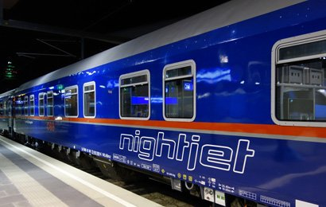

September 2019
Having decided not to fly, I need a plan.. Clearly, travel by train is going to form a big part of it. I provide more detail about resources that informed my planning in the methods section.
First I looked through my diary stretching into 2020. I cancelled a pending trips to the USA (sorry!). Future trips to conferences/workshops in Magdeburg and Salzburg looked feasible. Did you know that you can travel from London to Vienna by train in a day – about 12 travel time total? A forthcoming trip to Marseille was feasible by train – about 7h from London.
Austria by sleeper train! looks fun…
I realised that I was going to have to change the way I worked. Fewer but longer trips. Making sure I had the resources to work on the train. Travel for maximum impact: talks before large conference audiences might be worth it, but travelling to give a seminar to a small university department mostly wouldn’t be, unless the destination was easy to reach overland. So I also cancelled a future research visit to Hamburg (sorry!). Vivas could be conducted by videoconference. If the university regulations forbid that – well, sorry, find someone else. Or change the rules.
Straight away I received two new invitations: to give a research seminar in Germany, and a conference talk in Beijing. Both declined…sorry. In both cases, and in the case of the cancelled US talk, I offered to give the talk by videoconference. This was declined – in one case without explanation, in the other because of lack of facilities. Hmm…seems like there’s something that could be done about that.
I’ve always wanted to go to the machine learning conference ICLR. This coming year it’s in Addis Ababa. Hmm, just for fun: is that even possible overland? Apparently, yes. Train to Marseille. Freighter to Alexandria. Nile steamer + train to Khartoum. Then a very long bus ride to Addis Ababa. Total travel time: definitely not less than a month and probably ~6 weeks depending on the schedules. And that’s just one way! Perhaps I’ll wait til it’s back in Europe…